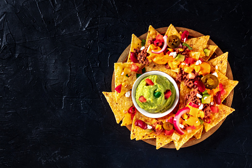

Nachos

Description
A cheesy plate of nachos filled with your choice of meat and a spicy kick. Perfect for the whole family to enjoy!
Ingredients
- 4lbs Ground Beef (or your choice of meat)
- 3 Jars of Queso
- 1 Large Jar of Picante Sauce
- Bag of Tortilla Chips
- 1 Onion
- 2 Tbsp of Tony's Creole Seasoning
Steps
- Chop whole onion
- Turn stove to medium low heat
- In a skillet add the chopped onions, meat and Tony's
- Cook until meat browns and fully cooks through, make sure onions are soft
- Remove meat and drain any fat in the pan
- Add meat back into the pan and add Picante and Queso
- Bring to a boil then lower heat and let simmer while stirring constantly
- Remove from heat and add to the tortilla chips
- Add any toppings that you deem fit and enjoy!